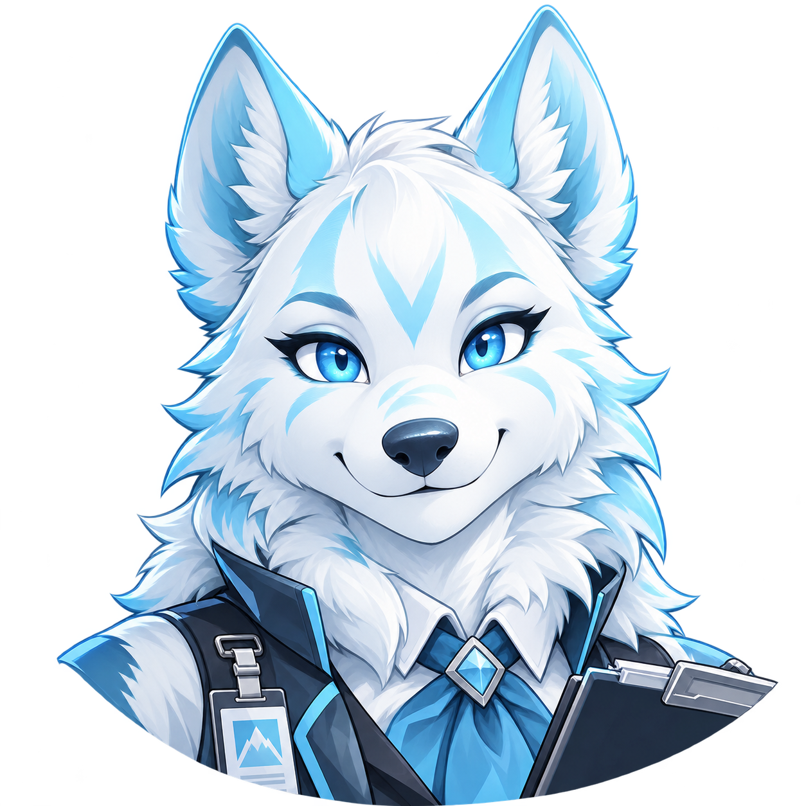

UPDATE AVAILABLE
CODA CONTROL CENTER
Ready when you are.
HOWL checking…BASE PACK checking…Minecraft 26.4 Snapshot 30 mods
H.O.W.L.
Howling Open Works Loader · Minecraft
CodaLauncher keeps the required game components current automatically.
H.O.W.L. versionsUpdate check has not completed yet.

Codaclipboard onlineFROM CODA'S DESK
News
CODA'S MOD DRAWER
Mods
Filed, checked, and ready to cause entirely responsible adventures.HOWL mod shelfCoda reads the active Minecraft profile's single mods folder.
CODA'S PACK SHELF
Packs
Complete Howling Whispers experiencesCoda keeps their mods, resources, music, configs and world content together.
1 PACK
CODA'S ART CABINET
Resourcepacks
Visuals, music, menus, and presentationRequired resources follow their Packs automatically. Coda handles the paperwork.
1 RESOURCEPACK
HOWL IDENTITY
Your profile
One Howling Whispers identity, wherever HOWL takes you.Minecraft account
Coda is checking your account paperwork.
Not signed in
Microsoft account tools in CodaLauncher are paused. Normally, the official Minecraft Launcher signs you in. For offline testing, enable Local Test Mode in Settings.CODA'S CLIPBOARD
Settings
The useful knobs. Coda keeps the dangerous-looking ones out of your way.🐺 Coda's experimental workshopNightly uses its own world saves under .howlingshispers/nightly/minecraft. Use NEW test worlds. No shared play or Microsoft sign-in.
Managed installCoda keeps Minecraft, H.O.W.L., required Packs, and Resourcepacks current before the world opens.
CODA'S PAPER TRAIL
Logs
Something acting strange? This is where Coda leaves the paperwork.Nothing interesting has happened yet.